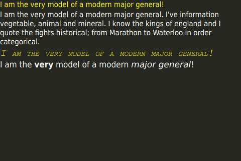

Use Case - Displaying Text In QML
Displaying and Formatting Text
To display text in QML, create a Text item and set the text property to the text you wish to display. The Text item will now display that text.
Several properties can be set on the Text item to style the entire block of text. These include color, font family, font size, bold and italic. For a full list of properties, consult the Text type documentation.
Rich text like markup can be used to selectively style specific sections of text with a Text item. Set Text::textFormat to Text.StyledText to use this functionality. More details are available in the documentation of the Text type.
Laying out Text
By default, Text will display the text as a single line unless it contains embedded newlines. To wrap the line, set the wrapMode property and give the text an explicit width for it to wrap to. If the width or height is not explicitly set, reading these properties will return the parameters of the bounding rect of the text (if you have explicitly set width or height, you can still use paintedWidth and paintedHeight). With these parameters in mind, the Text can be positioned like any other Item.
Example Code
import QtQuick 2.3 Item { id: root width: 480 height: 320 Rectangle { color: "#272822" width: 480 height: 320 } Column { spacing: 20 Text { text: 'I am the very model of a modern major general!' // color can be set on the entire element with this property color: "yellow" } Text { // For text to wrap, a width has to be explicitly provided width: root.width // This setting makes the text wrap at word boundaries when it goes past the width of the Text object wrapMode: Text.WordWrap // You can use \ to escape quotation marks, or to add new lines (\n). Use \\ to get a \ in the string text: 'I am the very model of a modern major general. I\'ve information vegetable, animal and mineral. I know the kings of england and I quote the fights historical; from Marathon to Waterloo in order categorical.' // color can be set on the entire element with this property color: "white" } Text { text: 'I am the very model of a modern major general!' // color can be set on the entire element with this property color: "yellow" // font properties can be set effciently on the whole string at once font { family: 'Courier'; pixelSize: 20; italic: true; capitalization: Font.SmallCaps } } Text { // HTML like markup can also be used text: '<font color="white">I am the <b>very</b> model of a modern <i>major general</i>!</font>' // This could also be written font { pointSize: 14 }. Both syntaxes are valid. font.pointSize: 14 // StyledText format supports fewer tags, but is more efficient than RichText textFormat: Text.StyledText } } }
